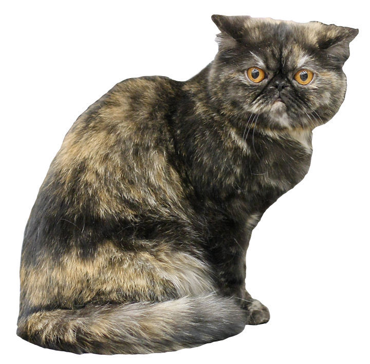

The Exotic Shorthair is a breed of cat developed to be a shorthaired version of the Persian. The Exotic Shorthair is similar to the Persian in many ways, including temperament and conformation, with the exception of the short dense coat. It has even inherited many of the Persian's health problems .
The Persian was used as an outcross secretly by some American Shorthair (ASH) breeders in the late 1950s to "improve" their breed. The crossbreed look gained recognition in the show ring but other American Shorthair breeders, unhappy with the changes, successfully pushed for a new breed standard that would disqualify ASH that showed signs of crossbreeding. One ASH breeder who saw the potential of the Persian/ASH cross proposed and eventually managed to get the Cat Fanciers' Association to recognize them as a new breed in 1966, under the name Exotic Shorthair. During the breeding program, crosses were also made with the Russian Blue and the Burmese. Since 1987, the only allowable outcross breed is the Persian. The Fédération Internationale Féline recognized the Exotic Shorthair in 1986.
Because of the regular use of Persians as outcrosses, some Exotics may carry a copy of the recessive longhair gene. When two such cats mate, there is a one in four chance of each offspring being longhaired. Ironically, longhaired Exotics are not considered Persians by CFA, although The International Cat Association accepts them as Persians. Other associations register them as a separate Exotic Longhair breed.[1]
References:
This article uses material from the Wikipedia article "Exotic_Shorthair", which is released under the Creative Commons Attribution-Share-Alike License 3.0.
Helgren, J. Anne.(2006) Iams Cat Breed Guide: Exotic Shorthair Telemark Productions
Picture: By Desaix83, d'après le travail d'Heikki Siltala (http://catza.net/en193321/view/breed/EXO/081071 /) [CC BY 3.0], via Wikimedia Commons
{kind=link}